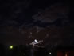
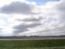
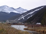
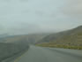

On July 30, 2005, I ended my personal Web site. After leaving, I promised that I would be back, someday.
Sadly, that day is not today. Though I am passively considering my next personal Web site, I remain committed to other priorities in my life. In the interim, since I so miss the opportunity to write and reflect, I have decided to write a few letters filling people in on my movements, all in anticipation of one day perhaps writing a blog again.
I may only post a handful of letters before launching endlessone.com. Expect my new full-blown personal Web site several months from now. Until then, enjoy whatever it is I have here.
If you would like to skip to the good stuff (the photos in this case), please visit my Flickr page. Thank you for checking in on me.

October 23, 2005: The Flight from Athens: I left Athens on July 31, 2005 in a yellow Penske bound for Dayton, Ohio. I was hoping my stay would be short, but it was ultimately 3 months before I was able to stuff all my things into my swollen Grand Prix and set off on my next adventure—my first job. But before I jet off to sunny California, take a look to see what crazy things I did while bumming around Dayton, Ohio.
Music: Namie Amuro - Come. To disable autoplay, click
here.

October 24, 2005: Goodbye Dayton: On my first day on the road, I said goodbye to my mother and grandmother, got in my car and started barreling down I-70. I drove through Ohio to Indiana, Illinois, Missouri, and Kansas. I marveled at the breathtaking scenery, as forest interior became rolling plains. Before resting today, I am submitting this letter all the way from Colby, Kan., so you can see what happened on the first day.
Music: Day by Day - Itazura Na Kiss. To disable autoplay, click
here.

October 25, 2005: Good Day: With 1,000 miles far behind me, I started out the second day, ready to bridge the next great distance before me. After slinking into Colorado early in the morning, I quickly realized I had underestimated the considerably treacherous mountain ranges of Colorado and Utah. The drive was a real challenge, but once I pulled into my cousin's driveway, I finished my very good day.
Music: The Dresden Dolls - Good Day. To disable autoplay, click
here.
October 26, 2005: Planning for Tomorrow: Before I could take the dive and start whatever it was I was starting in California, I stayed with Laura for a day in Las Vegas. Besides preparing a list of apartments to visit when I arrived in Visalia, I spent some quality time with my cousin and had my first experience with gambling. It was wonderful to see my cousin before taking on the last leg of my trip.
Music: Yann Tiersen - Something. To disable autoplay, click
here.

October 27, 2005: From Vegas to Visalia: It was definitely the most difficult day for me. Arriving in Visalia shortly before noon, I very nimbly explored the place that I would soon call home. Driving into the Valley was stunning sight and Visalia certainly had it's charms. After finding a place I thought would a perfect fit for me, I retreated to my hotel room—contemplating my new life in California.
Music: Kim Richey - A Place Called Home. To disable autoplay, click
here.
December 4, 2005: New Life : It's been about one month since I left Dayton—four months since I left Athens behind. Things are so different now. I have a real job, my own apartment and I'm very diligently collecting furniture for it. For what will likely be my final letter, learn about what life for me is like—in California.
Music: The Smiths - Some Girls Are Bigger Than Others. To disable autoplay, click
here.